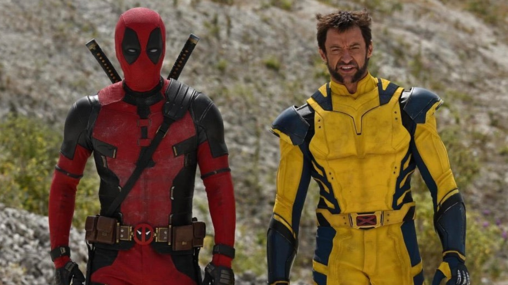

Deadpool 3: veja data de lançamento, elenco e tudo sobre o filme!
Com muito humor controverso e quebra da quarta parede, os filmes de Deadpool, lançados em 2016 e 2018, foram muito bem-sucedidos e alcançaram bilheterias expressivas para um filme de classificação R (para maior de 18 anos), nos Estados Unidos.
Agora, depois de muita espera, o terceiro longa foi anunciado, junto com a chegada do anti-herói ao Universo Cinematográfico da Marvel (MCU) — visto que a Fox foi adquirida pela Disney e todas as suas licenças agora pertencem à empresa do Mickey Mouse. Sendo assim, o tão aguardado Deadpool 3 promete muitas possibilidades de interações com outros heróis e, claro, novas aventuras.
O que sabemos até agora?
O primeiro anúncio do filme foi revelado no canal do YouTube de Ryan Reynolds, o ator que dá vida à Wade Wilson/Deadpool, publicado em 27 de setembro de 2022. Além de falar sobre a estreia do personagem no MCU, o ator anuncia a volta de Hugh Jackman como o clássico Wolverine pela última vez. Confira o vídeo, a seguir;
No dia seguinte, os protagonistas se reuniram para tirar dúvidas sobre a volta do Wolverine após Logan (2018), filme que conclui a história do personagem. No vídeo, Ryan afirma que Deadpool 3 não irá interferir no destino de Wolverine e muito menos no longa de 2018. "Não vamos tocar nisso", reforça. No momento em que eles deveriam dar a sinopse do filme, o áudio é abafado pelo hit dos anos 80, "Wake Me Up Before You Go-Go", do grupo Wham!.
Coringa: Folie à Deux
Coringa: Folie à Deux é a sequência do filme de 2019, novamente estrelado por Joaquin Phoenix (Napoleão), que faturou um Oscar de Melhor Ator pelo papel. Agora, ele terá a companhia de Lady Gaga (Nasce uma Estrela) no papel de Harleen Quinzel, a Arlequina.

The Boys
The Boys chega à sua quarta temporada em 2024 seguindo acontecimentos bombásticos da terceira temporada e de Gen V, seu surpreendentemente bom spin-off. Após falharem novamente ao tentar assassinar o Capitão Pátria, o grupo busca uma nova forma de atacar a Vought, indo para cima de Victoria Neuman, que agora é candidata a vice-presidente dos EUA.
Venom 3
Venom 3 deve marcar a despedida de Tom Hardy como o Protetor Letal, o anti-herói que de todos os que fazem parte do Universo da Sony com Homem-Aranha é o que chegou mais próximo do herói. Ainda não existem informações sobre a trama do terceiro filme, mas ele deve seguir o estilo das adaptações anteriores, colocando Eddie Brock e o simbionte enfrentando alguma versão sua que ameaça uma cidade nos Estados Unidos.
Liga da Justiça: Crise nas Infinitas Terras - Parte 1
Liga da Justiça: Crise nas Infinitas Terras é a adaptação da lendária história da DC criada por Marv Wolfman e George Pérez, que mostra o Anti-Monitor viajando pelo Multiverso da DC para destruir as diferentes Terras. Tentando impedi-lo, o Monitor começa a recrutar versões de heróis de diferentes universos para uma luta pela própria existência. Basicamente, é tudo o que a gente queria ver de multiverso feito com base em uma das HQs mais importantes da indústria.